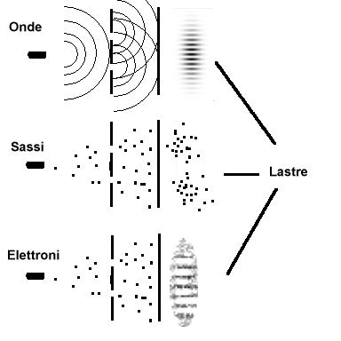
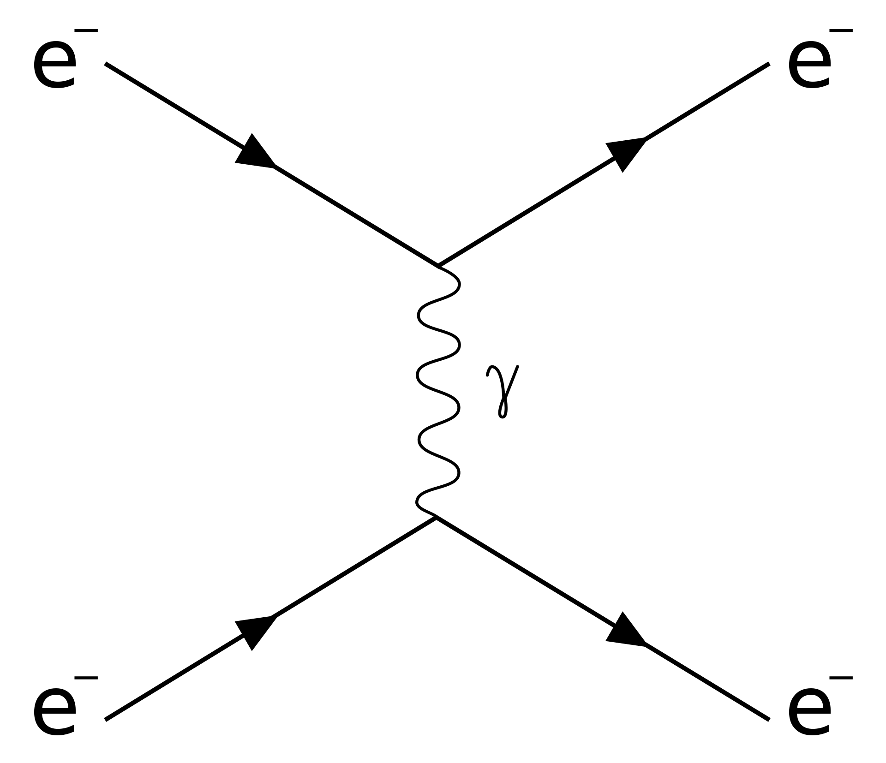
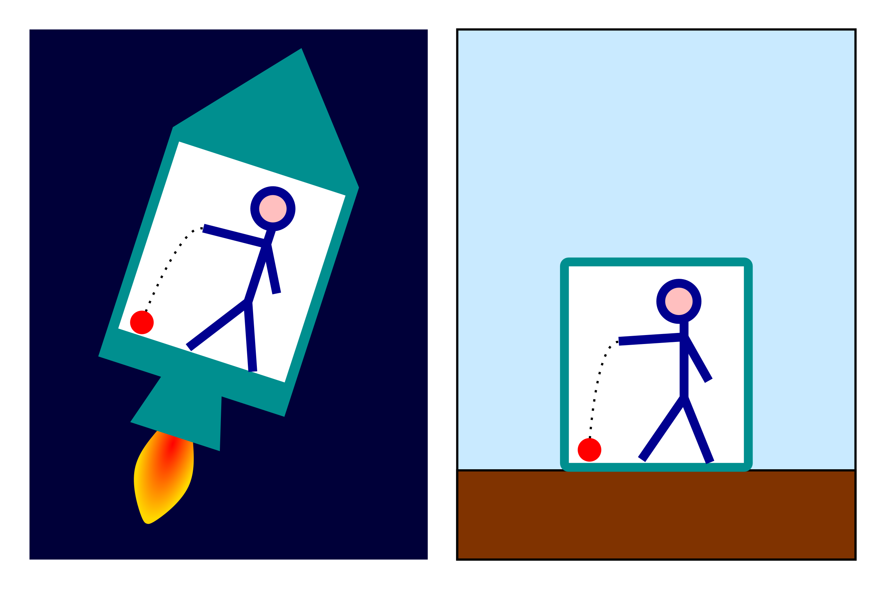
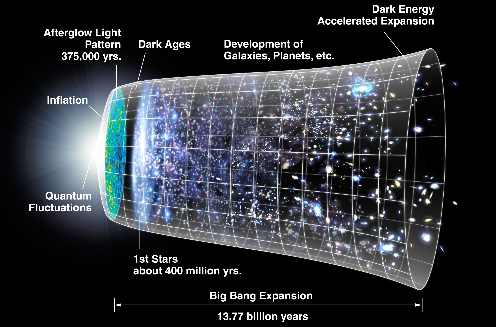
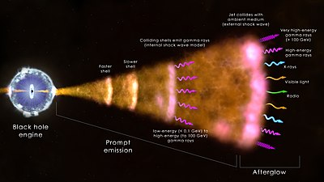

Centro San Domenico
Piazza San Domenico 12
40124 BOLOGNA
tel. 051 581718
http://www.csdricerca.com/
Bologna, 10 dicembre 2021
Agli amici degli
Incontri Interdisciplinari
Carissimi,
ci rivedremo lunedì 20 dicembre, alle ore 21, presso il Convento San Domenico, che ci ospiterà nella sua “sala del fuoco”, cui si accede da Via San Domenico 1.
Animerà l’incontro il prof. Francesco Longo, che ringraziamo a nome di tutti, sul tema:
“il campo gravitazionale e la meccanica quantistica”.
Dobbiamo incontrarci nel pieno rispetto delle norme contro il contagio da coronavirus: certificato verde e mascherina per accedere.
La sala è grande, ma il rispetto delle distanze impone un limite alle presenze. Le norme prevedono la necessità di prenotarsi: fatelo entro il venerdì precedente, 17 dicembre, per poter avvisare gli altri se il limite è stato raggiunto.
Vi preghiamo di ottemperare a questo obbligo, con un sms o inviando una mail a padre Sergio Parenti.
C’è anche la possibilità di partecipare on-line tramite Google-Meet. Anche il prof. Longo ci parlerà da Trieste! Si deve avere un account Google (è gratuito). Anche in questo caso, ma solo per chi non ha ancora partecipato, è indispensabile prenotarsi, via mail, a padre Sergio Parenti, sempre entro il venerdì 17, per ricevere il collegamento (link). Il collegamento verrà inviato alle 20,50.
In attesa di incontrarci, un cordiale saluto
fra Giovanni Bertuzzi O.P. fra Sergio Parenti O.P.
Breve resoconto dell’Incontro Interdisciplinare del 20 dicembre 2021
a cura di fra Sergio Parenti O.P.
LONGO - Sono un astrofisico sperimentale, non un fisico teorico, tuttavia sono interessato agli argomenti che stiamo discutendo. Dopo la laurea a Trieste con Guido Barbiellini Amidei, che si occupava dello studio dei corpi celesti grazie allo studio delle particelle e mi fece fare una ricerca sulla correlazione possibile dei segnali dai lampi di raggi gamma (o Gamma Ray Bursts) con le onde gravitazionali, allora ancora da scoprire, per continuare questi studi incontrai il prof. Pierluigi Fortini, che insegnava a Ferrara. Egli si occupava della possibilità di osservare le onde gravitazionali, in particolar modo quelle associate alle esplosioni di stelle ed ai lampi di raggi gamma che ci arrivano dall’universo. Feci il mio dottorato con Pierluigi, e con lui iniziai a frequentare il vostro gruppo. Insieme trovammo un argomento che interessasse la sua ricerca sulla gravità e la mia sui lampi di raggi gamma: la possibilità di studiare, grazie a satelliti allora in progettazione ma oggi operativi, i possibili effetti di gravità quantistica legati alla propagazione dei fotoni dalle sorgenti cosmologiche chiamate appunto Gamma-ray bursts. Quando, la volta scorsa, si parlò della gravità e della meccanica quantistica, mi è sembrato un pegno di doveroso ringraziamento ricordare Pierluigi e quanto ha fatto per me.
Sono rimasto interessato alle possibilità sperimentali di evidenziare qualche variazione rispetto alle quantità previste. Per le immagini che vi presenterò mi sono ispirato ad un bellissimo testo di Carlo Rovelli sulla gravità quantistica, in XXI SECOLO - 2010 (Enciclopedia Italiana - Treccani: il testo è reperibile su Internet cercando “gravità quantistica”).

( da Wikipedia)
Riprendendo quanto esposto dal prof. Julve la volta scorsa, abbiamo un esempio tipico: un cannone che spara elettroni ad uno ad uno. Se ci fosse una doppia fenditura avremmo le fasce di interferenza, mentre se si osserva il passaggio degli elettroni non si ha più la figura di interferenza. Cosi avviene per i fotoni ma non per gli oggetti macroscopici. Tutte le proprietà delle particelle sono descritte dalla funzione d’onda, perché il quadrato della sua ampiezza descrive la probabilità di trovare un determinato fenomeno in un determinato punto dello spazio-tempo in un certo istante. Quando vado ad osservare il fenomeno, la funzione d’onda si dice che “collassa” e vengo a sapere dove si trova esattamente la particella in quel momento. La volta scorsa abbiamo anche discusso delle proprietà non locali, legate all’entanglement, per cui dati due elementi che hanno proprietà comuni, se ne misuro una, anche a grande distanza, sono certo di conoscere cosa ci sia dall’altra parte.
Da parte della meccanica quantistica il grande miglioramento che si ebbe è quello legato all’elettrodinamica quantistica, che fa parte della teoria quantistica dei campi: ad esempio si può descrivere l’interazione tra due elettroni tramite il campo elettromagnetico come uno scambio di un bosone (in questo caso un fotone virtuale che vive nel tempo concessogli dal principio di indeterminazione di Heisenberg). Sono state fatte misure molto precise grazie a questo. Ed è l’esempio tipico di come il campo elettromagnetico possa includere al suo interno gli effetti quantistici ed anche gli effetti della relatività ristretta. Potrebbe essere l’esempio di come i campi fisici dovrebbero trasformarsi nel momento in cui si entra in contatto con la teoria quantistica relativistica.

( da Wikipedia)
Perché queste cose sono importanti nel confronto con la gravità? Vedete: qui ho uno scambio di un fotone. Nella gravità le particelle che interagiscono, se dovessero scambiarsi un ipotetico quanto chiamato gravitone, il quanto avrebbe anch’esso energia da scambiare; ma nella relatività generale anche l’energia è sorgente di campo: quindi dovrebbe generare ulteriori interazioni all’infinito. Per questo la teoria quantistica della gravità non può seguire la stessa strada dell’elettrodinamica quantistica. È il problema della rinormalizzazione.
Questa è la prima grossa difficoltà che si è trovata.
La seconda nasce proprio dal successo della teoria della relatività. La meccanica quantistica è fenomenale per i problemi a livello microscopico e la relatività generale lo è per i problemi cosmologici, ma sono due teorie che tra loro non si parlano.

( da Wikipedia)
Nella teoria della gravità di Newton i pianeti si muovono su orbite ellittiche in uno spazio infinito tridimensionale con un tempo che scorre uguale per tutti. Questa teoria la usiamo per descrivere i moti di corpi massivi che non viaggino a velocità vicine a quella della luce. Ma Einstein stesso, nello sviluppo della sua teoria, fece il cosiddetto esperimento mentale dell’ascensore. Se sono in un ascensore senza finestre fermo, e lascio cadere un corpo, attribuisco questo alla forza di gravità dovuta alla massa della Terra. Se però fossi in un ascensore fuori della Terra che accelera verso l’alto allo stesso modo, vedrei il corpo cadere per inerzia con la stessa accelerazione g e i fenomeni sarebbero indistinguibili. La relatività generale non ha più il concetto di “forza”, ma il corpo massivo deforma lo spazio-tempo attorno a sé e corpi si muovono nello spazio-tempo deformato seguendo le linee (chiamate geodetiche) di minima distanza. Anche il fascio di luce viene deflesso. Dunque lo spazio-tempo non è più un parametro dell’equazione, con uno spazio infinito ed un tempo che scorre uguale per tutti. Le misure dello spazio e del tempo dipendono non solo dallo stato di moto ma dalla presenza di corpi massivi che deformano lo spazio-tempo attorno. Invece nella meccanica quantistica il tempo è un parametro dell’equazione.
Tenete presente che, come le descrizioni della natura microscopica hanno tutta una serie di applicazioni fondamentali, lo stesso è vero della relatività generale. I nostri cellulari utilizzano il gps, il cui funzionamento necessita di tener conto della misura del tempo secondo la relatività generale, altrimenti non funzionerebbero. La teoria prevedeva le onde gravitazionali, che anche Pierluigi cercava. Sono state finalmente trovate nel 2015: il primo cui telefonai alla notizia della scoperta fu appunto lui, che già non stava bene. Che cosa sono? Due corpi massivi che ruotano uno attorno all’altro in particolari condizioni di asimmetria, generano fluttuazioni che si propagano nello spazio-tempo: sono analoghe non alle onde di probabilità della meccanica quantistica, bensì alle onde elettromagnetiche di cui il fotone è la particella. La teoria prevedeva anche la presenza di buchi neri: oggetti in cui la curvatura dello spazio-tempo è tale che la luce non possa uscirne. In astrofisica si potevano cercare oggetti con una tale massa e di fatto si sono trovati: e un insieme di radiotelescopi di tutto il mondo è riuscito a darcene un’immagine.
Da dove viene il problema della gravità quantistica? Dice Rovelli, nell’articolo che vi ho segnalato, che oggi non esiste una teoria della gravità quantistica accettata. Esistono però alcune teorie ipotetiche sulle quali si è concentrato l’interesse della ricerca: le più studiate sono la teoria delle stringhe e la teoria della gravità quantistica a loop. Della teoria delle stringhe ci si è già occupati. Da dove viene la difficoltà? I fenomeni quantistici della gravità si attuano su energie estremamente elevate, stante la debolezza della forza di gravità, e le dimensioni che li racchiudono sono dimensioni dello spazio-tempo a valori della lunghezza di Planck. La lunghezza di Planck è dell’ordine di 10-35 metri, il tempo di Planck è 5 x 10-44 secondi e la massa di Planck è dell’ordine di 10-8 kilogrammi: sono misure estremamente piccole. La gravità quantistica dovrebbe attuarsi e venire osservata in queste dimensioni!
Ma ci sono altre differenze. Nella meccanica quantistica lo spazio è lo sfondo dove avviene l’evoluzione della funzione d’onda; mentre qui è lo spazio-tempo stesso l’elemento del campo: come potrebbe evolversi nello stesso fondo di cui esso stesso è fatto? Nella meccanica quantistica la misura del tempo governa lo sviluppo dell’equazione di Schrödinger, mentre qui la misura del tempo dipende dallo stato di moto, dalla quantità di massa presente, dall’osservatore: non esiste un tempo per cui si possa descrivere l’evoluzione temporale del sistema. Dice Rovelli che occorre costruire una nuova concettualizzazione del mondo fisico, in cui spazio e tempo non siano più pensati come un contenitore del mondo, bensì aspetti fenomenologici di un’unica entità fondamentale, il campo gravitazionale quantistico. Tale sforzo deve esprimersi in una teoria matematica capace di contenere queste novità concettuali. Le linee di ricerca che cercano di risolvere il problema sono sostanzialmente due.
La prima è la teoria delle stringhe, per la quale la materia è fatta di molecole, le molecole di atomi, gli atomi di particelle che “orbitano” attorno ai nuclei, i nuclei sono fatti di nucleoni, i nucleoni sono fatti di quark ed infine sia gli elettroni che i quark sono manifestazione di elementi più piccoli, le stringhe, le cui vibrazioni genererebbero tutte le particelle di materia e di interazione (come i fotoni), a seconda che siano stringhe di un tipo o di un altro. In particolare si è scoperto che una particolare vibrazione di queste stringhe avrebbe tutte le proprietà del gravitone, che ipoteticamente dovrebbe essere la particella quantistica del campo gravitazionale. La teoria delle stringhe non ha come scopo principale la ricerca del gravitone. Come diceva Frattini (Incontro Interdisciplinare del 22 gennaio 2018) la teoria delle stringhe prevede, oltre alle tre dimensioni spaziali ed una temporale, altre sei o sette dimensioni, però troppo piccole per essere osservate. Ha sviluppi teorici notevolissimi, ma non ha ancora proprietà sperimentali che possano essere rivelate. Avrebbe previsione di alcune particelle, cercate attivamente ma non ancora trovate.
Un secondo approccio è la gravità quantistica a loop. Non pretende di essere una teoria del tutto come vorrebbe fare la teoria delle stringhe, ma si occupa solo del campo gravitazionale. Come il fotone è un’oscillazione del campo elettromagnetico, così lo spazio-tempo avrebbe una struttura a piccoli reticoli (i loop) di fluttuazioni del campo gravitazionale. Quindi avrebbe una struttura di connessioni causali piccole, il cui limite sarebbe la lunghezza di Planck, che è la dimensione anche della stringa. La teoria a loop si occupa solo del campo gravitazionale e non ha lo scopo di descrivere tutti i fenomeni quantistici.
Ci sono anche altre teorie: mi limito a citarvene una: la teoria della geometria non commutativa. Come nel principio di indeterminazione di Heisenberg ci sono variabili che non commutano, anche qui ci sarebbero strumenti matematici per descrivere queste proprietà all’interno della geometria dello spazio-tempo. Ma non ho approfondito questo argomento.
Queste teorie dovrebbero dare spiegazione a due tematiche particolarmente importanti: la prima riguarda l’evaporazione dei buchi neri e la seconda riguarda l’origine dell’universo.
Parliamo della prima tematica: questo fenomeno, chiamato “la radiazione di Hawking”, è forse l’unico fenomeno, che già si vede, in cui vi è una connessione tra la meccanica quantistica e la relatività generale. Supponiamo che vi sia un buco nero all’interno del cosiddetto orizzonte degli eventi, da cui una quantità, un’energia o una radiazione non potrebbe più uscire. Abbiamo visto prima che l’interazione dell’elettrodinamica quantistica fa sì che, per interagire, tra due elettroni (o un elettrone e un positrone) vi è lo scambio di una particella virtuale chiamata fotone, che vive soltanto per il tempo concesso dal principio di indeterminazione di Heisenberg. Lo stesso è vero se ho un fotone. Questo fotone può convertire in una coppia positrone-elettrone virtuali che poi si annichilano riformando lo stesso fenomeno iniziale, purché vivano per un tempo sufficientemente piccolo da esser compatibile con il principio di indeterminazione di Heisenberg. Supponiamo che ci sia appunto una particella di energia positiva e la sua antiparticella di energia negativa nelle vicinanze del buco nero. Queste normalmente si creano e si distruggono contemporaneamente. Supponiamo che una di queste particelle venga catturata dal buco nero. La seconda particella esce allora a tutti gli effetti dal buco nero, sottraendogli energia: questo buco nero in questo modo evaporerebbe.
Questo fenomeno quantistico, legato ad un oggetto della relatività generale, va spiegato da tutte le teorie quantistiche. Sia quella a loop quanto quella delle stringhe ci stanno provando con esiti non definitivi.
La seconda tematica riguarda l’origine dell’universo.

( da Wikipedia)
L’immagine ci mostra come siamo oggi, circa quattordici miliardi di anni dopo il big bang. Se torniamo indietro la luce più antica che riusciamo a vedere è di circa 400.000 anni dopo il Big Bang: quello che c’è prima è materia di speculazione teorica. Ad esempio nei primissimi istanti, sino a 10-32 secondi dopo il Bang Bang, quindi già a dieci ordini di grandezza dalla scala di Planck, si pensa che avvenga il fenomeno dell’Inflazione. Più si va verso il Big Bang, più i fenomeni quantistici dovrebbero entrare in gioco per spiegare l’origine e l’evoluzione dell’Universo.
Dunque sia la spiegazione dell’evaporazione del buco nero, sia la spiegazione dell’origine dell’universo sono tematiche su cui qualsiasi teoria della gravità quantistica avrà a che fare.
Io mi occupo soprattutto di misure sperimentali.

( da Wikipedia)
Se c’è un’esplosione cosmica di una sorgente, un gamma-ray burst, a distanze cosmologiche, i fotoni di diversa energia “sentirebbero”, la struttura dello spazio tempo. Se il campo gravitazionale è fluttuante, i vari fotoni percorrono strade diverse. Quindi subirebbero un ritardo a seconda della loro energia. Ma la loro velocità è la stessa. Allora le misure permetterebbero di mettere dei limiti sulla quantizzazione possibile della gravità. Una di queste misure l’abbiamo fatta nel 2009 e ha generato notevoli implicazioni teoriche.
Un’altra misura che sarà possibile nei prossimi anni è quella che si chiama bi-rifrangenza. Un raggio di luce, all’interno di un certo materiale (come nelle lenti dei nostri occhiali Polaroid), passa solo se ha una certa polarizzazione, cioè se il campo elettrico oscilla in una certa direzione, mentre in un’altra direzione il campo viene attenuato o subisce una rifrazione diversa. Si chiama bi-rifrangenza perché le polarizzazioni del raggio di luce subiscono una rifrazione diversa. Secondo alcune teorie della gravità quantistica se la luce da sorgente celeste fosse polarizzata, l’interazione con il campo quantistico gravitazionale avrebbe un effetto di depolarizzazione immediato: nessuna sorgente astrofisica, se il campo gravitazionale è polarizzato, avrebbe una polarizzazione misurabile secondo un determinato grado; o, di converso, la misura di una polarizzazione mi dà delle informazioni sulla struttura dello spazio-tempo quantistico.
In entrambi questi casi non si osserva direttamente il fenomeno quantistico in atto, ma l’accumularsi di minimi effetti sulla propagazione su lunghe distanze.
Quali sono le implicazioni filosofiche?
Il primo, dice Rovelli, è che lo spazio di Newton (ripreso da Kant) è tridimensionale e presente anche se non ci fosse materia all’interno. Non era così per gli antichi, per i quali è legato alle relazioni tra gli oggetti e non esisteva in assenza di oggetti. Così per la gravità quantistica: non esiste uno spazio in cui avvengono questi fenomeni, ma è la relazione tra gli oggetti che cambia. Lo spazio sarebbe una quantità relazionale tra oggetti.
Per la natura del tempo, non c’è più un tempo uguale per tutti già dalla relatività ristretta: c’è solo il nostro passato e il nostro futuro, e per la relatività generale il tempo dipende dallo stato di moto, dalla massa dell’oggetto. Per la gravità quantistica cosa vuol dire che il tempo “fluttua”? Ci sono formulazioni nella gravità quantistica a loop dove il tempo non è più una variabile dell’equazione stessa. Quindi si potrebbe pensare ad una descrizione dove il tempo non esiste più in questa struttura quantistica dello spazio-tempo.
La discussione aprirebbe tematiche legate alla natura filosofica di che cosa sia lo spazio, il tempo, le interazioni, la massa, l’energia… Come al tempo della mia laurea non c’era speranza di riuscire ad osservare le onde gravitazionali, mentre sono state osservate, forse riusciremo a trovare effetti di gravità quantistica anche se ora sembra impossibile.
Le novità delle teorie vengono quando ci si trova ad affrontare tematiche che sono tra loro in disaccordo. Per esempio il disaccordo tra la meccanica classica con l’elettromagnetismo ha fatto nascere la relatività ristretta. La fisica teorica aspetta un’altra rivoluzione.
FALCIASECCA - Le onde elettromagnetiche erano state rivelate nel caso di grandi sorgenti come i temporali e si era convinti della impossibilità di trasmettere segnali molto più deboli. Marconi, trovando un rivelatore più sensibile, riuscì a farlo. Oggi stiamo muovendoci con la convinzione di poter descrivere in modo completo come vadano le cose. Io penso che fenomeni molto complessi non ammettano un unico punto di vista ed un’unica teoria che li descriva. Invece, man mano che sorgono nuovi punti di vista e diverse teorie, la nostra conoscenza migliora sempre senza arrivare ad una conoscenza completa.
LONGO - Mentre la teoria delle stringhe cercava la teoria del tutto, la teoria della gravità quantistica cerca di capire come si comporterebbe la natura a scale dove la gravità diventerebbe dominante rispetto alle altre forze (le scale dell’inizio dell’Universo o scale vicine ai tempi di Planck). Non sono più io che cerco una teoria che unifichi tutto, ma è la natura stessa che mi impone di poterla descrivere con le stesse modalità con cui ho cercato di descrivere la meccanica quantistica. Per il resto sono d’accordo.
CASADIO - Ho una prima domanda: l’ESA comunica che i buchi neri avrebbero accompagnato l’evoluzione dell’universo fin dal principio, mentre si pensava che fossero comparsi tardi; quanto questo può cambiare le nostre tematiche?
Poi mi chiedo: oltre al problema sottolineato da Falciasecca a proposito di una teoria del tutto, in che modo percepiamo il tempo? Noi siamo oggetti limitati. La nostra formazione, dal punto di vista molecolare, avviene a spese della dissipazione di entropia per recuperare energia, destinati comunque a collassare. La nostra concezione dello spazio-tempo è condizionata dal nostro modo di rapportarci al mondo e ci porta ad orizzonti non immediatamente percepibili. Cosa intendiamo per “universo” ed evoluzione dell’universo? L’universo è un sistema chiuso o aperto? Se è chiuso, gli assiomi della termodinamica possono funzionare, ma se è aperto no.
LONGO - A proposito del lavoro di cui parla l’ESA: riguarda la possibilità che fin dall’inizio si siano formati buchi neri che non sarebbero evaporati, ma potrebbero essere parte fondamentale della materia oscura. Si potrebbero misurare dall’alterazione delle onde gravitazionali e con il telescopio che verrà lanciato la mattina del 24 dicembre. Circa la domanda sull’universo aperto o chiuso: una interpretazione della meccanica quantistica non vede la funzione d’onda nel senso di molte probabilità, ma nel senso di molte storie. Tutti gli eventi che si possono realizzare si realizzano: sono le teorie del multiverso. Noi saremmo una delle tantissime realizzazioni di queste molte storie. Allora l’universo sarebbe in qualche modo un sistema aperto. Altrimenti il nostro universo è un sistema chiuso, perché non c’è uno spazio in cui l’universo si espande. L’entropia dell’universo sta crescendo.
CASADIO - Noi abbiamo un massimo di lunghezza che possiamo esplorare. Tra cento anni potranno osservare oltre. Mi devo aspettare l’acquisizione di altri fenomeni? Verso quali spazi stiamo andando?
LONGO - Noi vediamo la luce delle sorgenti che l’hanno emessa quando l’universo aveva qualche centinaio di milioni di anni dal big bang. La radiazione del fondo cosmico a microonde arriva a 380.000 anni dal big bang. Per questo l’età dell’universo è circa 14 miliardi di anni. Nel frattempo l’universo si espande: è ora molto più grande di 14 miliardi di anni luce. Ci sono porzioni dell’universo che non potremo mai vedere, perché si allontanano da noi ad una velocità superiore a quelle della luce. Questo non è in contraddizione col limite della velocità della luce, perché non sono gli oggetti che si spostano, ma si allarga lo spazio-tempo. Sir Martin Rees, grande astrofisico inglese, usa quest’ultimo argomento per ipotizzare il multiverso (Prima dell'inizio: il nostro universo e gli altri, Milano, Raffaello Cortina, 1998): il nostro è solo uno degli universi, ma non potremo mai osservare gli altri. Sappiamo che ci sono solo dalla consistenza delle equazioni che usiamo per descrivere quello che vediamo: un discorso filosofico.
CASADIO - Come mai tutte queste affermazioni sono così poco intuibili? Si tratta di modelli non accessibili al grande pubblico!
LONGO - La meccanica quantistica non è compresa. Le interpretazioni sono lontane da quello che la meccanica quantistica dice, ma sono assonanti a quello che vorremmo che la meccanica quantistica dicesse. Però fanno riflettere. Per me è più facile spiegare la relatività generale, anche se anch’essa non è ancora compresa, dopo 100 anni (è del 1915). Spero che con la scoperta delle onde gravitazionali e le misure che dovremmo riuscire a fare, diventerà più facile per tutti comprendere che la misura del tempo e dello spazio non sono realtà assolute, e la relatività generale non sarà più un discorso per addetti ai lavori.
FALCIASECCA - Quando si spiega che perché funzioni il gps, che tutti usiamo, occorre tener conto della relatività generale e il discorso diventa meno duro da accettare rispetto alla meccanica quantistica. Ma per l’ipotesi dei multiversi che non vedremo mai, ma che servono a rendere consistenti le nostre ipotesi sul nostro universo, mi viene in mente che quello che corrisponde ad una probabilità potrebbe essere l’unica realizzazione di una di queste. E da qualche parte dello spazio-tempo potrebbero esserci realizzazioni che però non vedremo mai.
JULVE - Come si è detto, tra i candidati ad essere teoria quantistica della gravità i principali sono la teoria delle stringhe e la loop-quantum. Delle stringhe la virtù è che si presenta come teoria del tutto e quindi anche della gravità. Mi sembra che preveda l’esistenza di campi di spin 2, quindi del gravitone.
LONGO - Sì. Questo la rende interessante.
JULVE - Però non predice esattamente la struttura degli auto-accoppiamenti con la struttura non polinomiale, caratteristica e distintiva della relatività generale: non mi risulta che dalle stringhe si possano ricavare le equazioni di Einstein. Si ferma a prevedere il gravitone. La loop quantum gravity parla solo della gravitazione, ma non include le altre interazioni fondamentali.
LONGO - Sì.
JULVE - Avrei poi delle perplessità sulle teorie del multiverso. L’universo è in espansione accelerata. Questa espansione del tessuto spazio-temporale non è tenuta a rispettare il limite della velocità della luce, perché non è un’interazione che si propaga in uno spazio-tempo (lì vige la relatività ristretta). Ci sono porzioni dell’universo che allontanandosi a velocità sempre più alta, che ad un certo momento supera la velocità della luce, sfuggono alla nostra osservazione e l’universo visibile perde costituenti. L’universo visibile, come tale, è chiuso per definizione: è visibile solo ciò che è visibile. Ma come sistema termodinamico è aperto. Possiamo comunque presumere che le parti dell’universo realmente esistente, che oggi sfuggono alla nostra osservazione, ma che una volta facevano parte del nostro universo, siano connesse causalmente e avranno le stesse leggi e proprietà delle cose che conosciamo nell’osservabile. Le costanti universali restano le stesse, comprese le costanti antropiche. L’universo sarà pressapoco uguale.
Altre proposte di universi paralleli vengono, penso, perché si dice che la funzione d’onda di un elettrone, che lo descrive sparpagliato nello spazio, quando si va a misurare la sua posizione e lo si trova in un determinato punto, collassa. Ma l’informazione che riguarda lo spazio non può perdersi: dunque va a formare universi paralleli. Questo tipo di universo parallelo non è collegato causalmente con questo universo: per questo può avere costanti fisiche diverse, non antropici o accoglienti per la vita. Questo universo credo non c’entri niente con questo universo.
LONGO - Rees diceva, a chi obiettava che gli altri universi non osservabili non rientrano in una teoria fisica, che anche le galassie che sono al di là dell’orizzonte cosmologico dovrebbero esserne fuori. Però mi sembra un argomento ben posto la sua osservazione che gli universi che ora sono fuori una volta ne facevano parte, mentre i multiversi non ne avrebbero mai fatto parte.
BERTUZZI - La filosofia è stata chiamata in causa. Filosoficamente è problematica l’interpretazione dell’universo come un tutto. La nozione di spazio e di tempo, da Kant in poi, non è desunta dall’esperienza, ma l’oggetto della scienza è costruito dall’intelletto umano attraverso il sistema di relazioni che la matematica, soprattutto, riesce a stabilire. Nella concezione della scienza matematica moderna l’oggetto e le teorie sono in parte costruite dall’intelletto umano. Oggi si ipotizza che possano esserci fenomeni dell’universo che sfuggono alla nostra esperienza: questo è il grosso problema per una teoria del tutto. Il problema è riuscire a determinare che cosa il soggetto della scienza e della filosofia (cioè l’intelligenza umana) possa ipotizzare dell’oggetto della scienza e che cosa debba essere riconosciuto come dato della scienza. Ci sono due tipi di relazioni che l’uomo stabilisce con la realtà: il riconoscimento di ciò che è dato dall’esperienza e ciò che con l’intelletto possiamo costruire noi nell’esperienza. Kant diceva che le forme a priori sono il modo di unificare l’esperienza da parte dell’intelletto (pensiamo alla logica ed alla matematica). Queste forme a priori, secondo lui, l’intelletto le può sviluppare in teorie che vanno anche al di là dell’esperienza; ma la fisica consiste soltanto nel fermarsi a quello che può essere confermato dall’esperienza. Per lui le idee intorno al mondo sono al di là della scienza.
CASADIO - Ci sono limiti che non riusciremo a superare. Però la fisica sta tentando di capire la struttura dell’atomo e l’origine dell’universo. Sull’argomento ho letto cose ben più affascinanti di un romanzo di fantascienza. Noi, quando arriviamo a dei limiti, iniziamo a fare altre domande: è il nostro modo di procedere.
LONGO - C’è l’aspetto sperimentale e c’è l’aspetto teorico. Quello teorico è sempre più legato alla fisica matematica, ma quello che non è sperimentabile e misurabile non è oggetto del nostro campo di ricerca. Anche la filosofia ha però un suo campo di ricerca. Non si può chiamare in causa la filosofia ogni volta in cui si deve fare una discussione che non sia di misurabilità scientifica. Alle volte si usa il nome di “filosofia” in modo non corretto.
FALCIASECCA - Si usa anche il termine “metafisica”.
CAPELLA - Fortini diceva che spesso il pensiero anticipa e poi l’osservazione conferma. La bellezza dell’intelligenza dell’uomo è questa.
JULVE - Lee Smolin ha scritto un libro ("The trouble with Physics") molto dissacrante a proposito della teoria delle stringhe. Che cosa ne pensa?
LONGO - La teoria delle stringhe sta chiedendo alla fisica teorica una quantità di risorse che non è paragonabile ai risultati che sta ottenendo. Altre teorie, come la gravità a loop, che avrebbe altrettanta necessità di sviluppi, non è così “sostenuta”: come astrofisico sono più incline alla possibilità di misurare effetti fenomenologici della possibilità di uno spazio-tempo quantistico che non al come questi effetti si sviluppino.